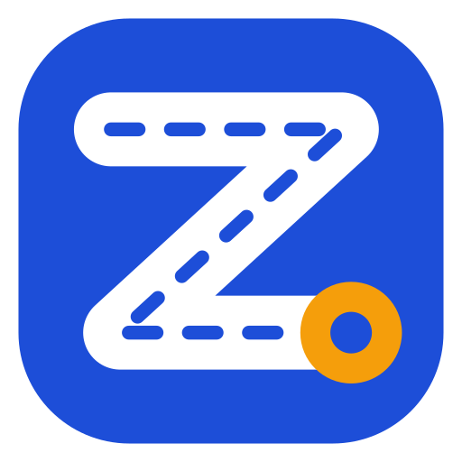
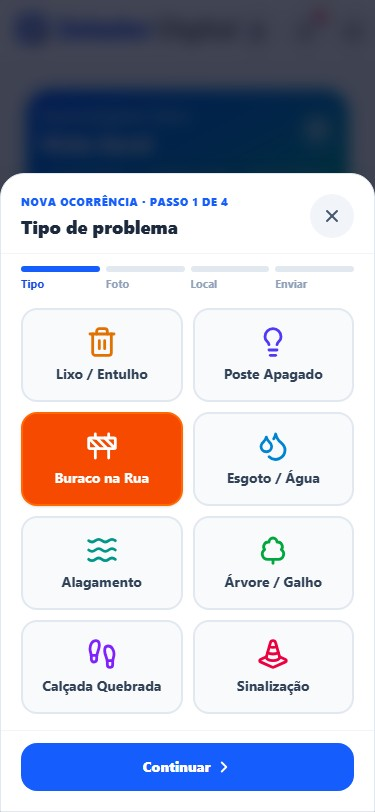
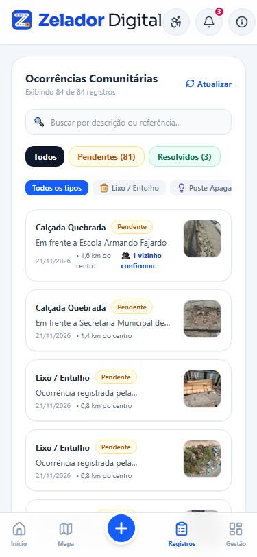

Em Ananindeua-PA, buracos, postes apagados, lixo e esgoto a céu aberto afetam o dia a dia das periferias. Os canais de relato são difíceis e sem retorno ao morador.
vias e calçadas
ruas no escuro
descarte irregular
e alagamentos

Foto e GPS em 4 passos, gratuito.
Protocolo na hora e aviso de status.
Sem internet, leitor de tela e Modo Fácil.
Registro em 4 passos, com foto e GPS.
Para pessoas com deficiência e pouca familiaridade digital.
Funciona sem internet e envia sozinho quando a rede volta.
Protocolo, consulta pública e aviso de status.
GPS do celular ou dados da foto (EXIF)
Rostos e placas borrados no aparelho
Guarda e envia quando a rede volta
Postgres + PostGIS, regras de acesso (RLS)
Leaflet / OpenStreetMap
React 19, Vite 8 e Tailwind 4. Instala no celular, sem loja.
Leaflet + OpenStreetMap. Local pelo GPS ou pela foto.
Supabase: Postgres + PostGIS, fotos, login e RLS.
Fila no IndexedDB. Protocolo gerado na hora.
Web Push no status. Rostos e placas borrados (LGPD).
Vitest, Playwright e CI no GitHub. Software livre (AGPL-3.0).
Veja o grupo, os problemas mais comuns e o resultado da simulação.
com foto, GPS e protocolo na hora
envia sozinho quando a rede volta
Gravidade × Urgência × Tendência no painel
O morador acompanha o status pelo celular e consulta o mapa comunitário. Os dados abertos apoiam um planejamento urbano mais justo e sustentável.
(a) Início
(b) Nova ocorrência

(c) Registros
Fonte: elaborado pelos autores, 2026.
Fonte: elaborado pelos autores, 2026.
Fonte: elaborado pelos autores, 2026.
Ainda não há dados reais de campo. Testamos no computador com uma simulação Monte Carlo em seis bairros, com vulnerabilidade pelo IVS do IPEA.
Canal tradicional, como funciona agora.
App com fila por ordem de chegada.
Prioridade GUT + botão “Também vi”.
Fonte: elaborado pelos autores, 2026. Simulação Monte Carlo com dados fictícios, cenário padrão. Toque em um cenário para destacar.
Só 54% dos problemas viram protocolo (75% pelo app), e são atendidos depois.
A fila cresce e só 16% são resolvidos em 7 dias.
Periferia passa à frente do centro.
Confirmar com dados reais da Prefeitura de Ananindeua.
O ganho vem do app junto com uma regra justa de prioridade, não só do registro.
Com moradores e pessoas com deficiência
Parceria com a Prefeitura de Ananindeua
Parceria com lideranças comunitárias
Outras cidades da Região Metropolitana de Belém
BRASIL. Lei nº 13.709, de 14 de agosto de 2018. Lei Geral de Proteção de Dados Pessoais (LGPD). Diário Oficial da União: seção 1, Brasília, DF, 15 ago. 2018.
GOODCHILD, M. F. Citizens as sensors: the world of volunteered geography. GeoJournal, v. 69, n. 4, p. 211-221, 2007.
INSTITUTO DE PESQUISA ECONÔMICA APLICADA (IPEA). Atlas da vulnerabilidade social nos municípios brasileiros. Brasília: IPEA, 2015.
INSTITUTO FEDERAL DE EDUCAÇÃO, CIÊNCIA E TECNOLOGIA DO PARÁ. VIII SIEPEX: Ciência Delas: inclusão, ciência, tecnologia e sustentabilidade para transformar a Amazônia. Ananindeua: IFPA Campus Ananindeua, 2026.
KEPNER, C. H.; TREGOE, B. B. The new rational manager. Princeton: Princeton Research Press, 1981.
NAÇÕES UNIDAS. Objetivo de Desenvolvimento Sustentável 11: cidades e comunidades sustentáveis. Brasília, DF: Nações Unidas Brasil, [s.d.]. Disponível em: https://brasil.un.org/pt-br/sdgs/11. Acesso em: 17 nov. 2026.
Mapa: © colaboradores do OpenStreetMap (ODbL). Fotos dos bairros: Wikimedia Commons — Vinicius Alexandre (CC BY-SA 4.0) e rafateles48 (CC BY 3.0).
Ao IFPA Campus Ananindeua, ao VIII SIEPEX e à comunidade de Ananindeua, que inspira e dá sentido ao Zelador Digital Comunitário.